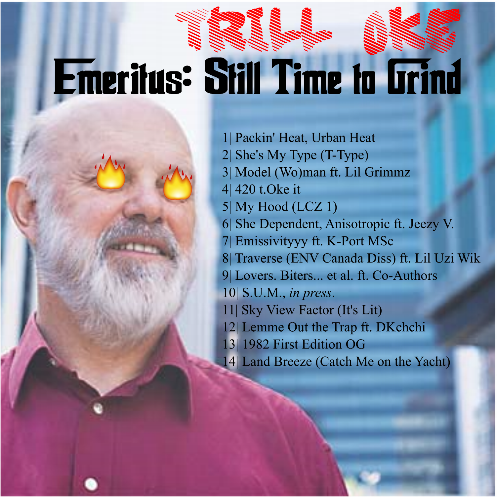

Michael Allen is a PhD student in the Department of Geography at UCSB, working in remote sensing of urban surface climates. He recently completed a MSc in Physical Geography at the University of Western Ontario. His thesis develops a method to derive 3-dimensional urban surface temperature and provides the first time-contious, geometrically representative analysis of the surface urban heat island effect.
Michael's interests include:
- Developing new observational methodology and modeling tools for assessing urban surface temperature and urban heat islands.